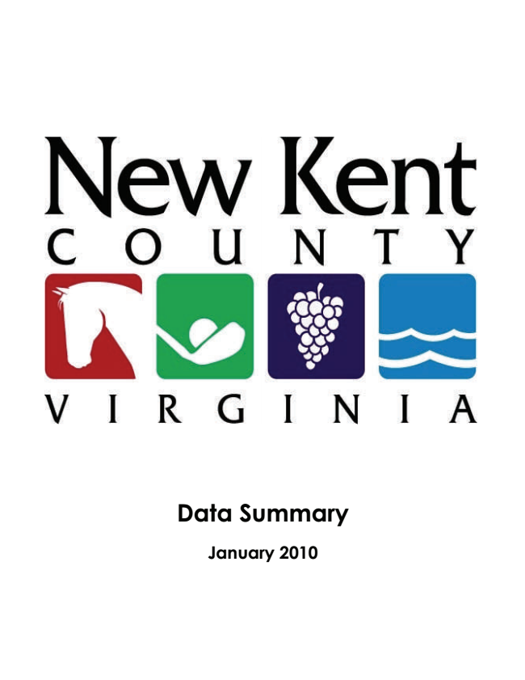
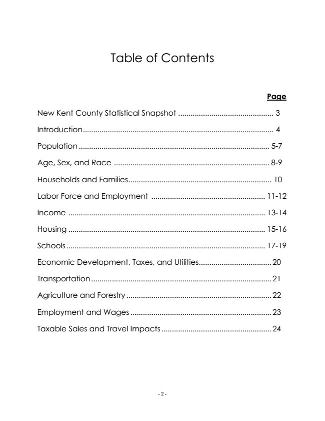
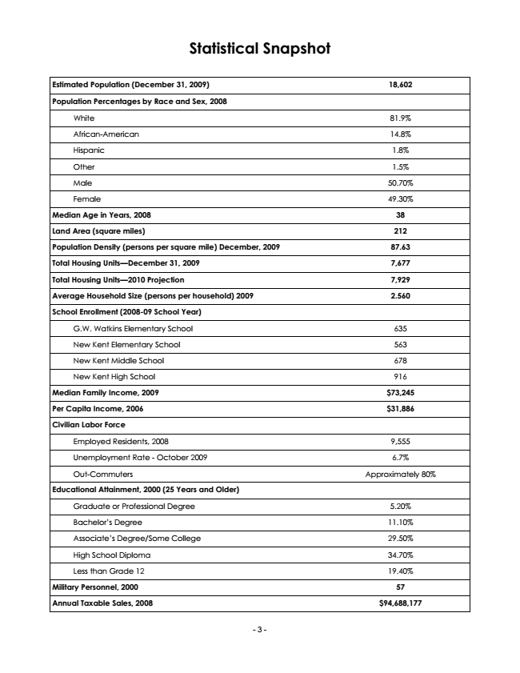
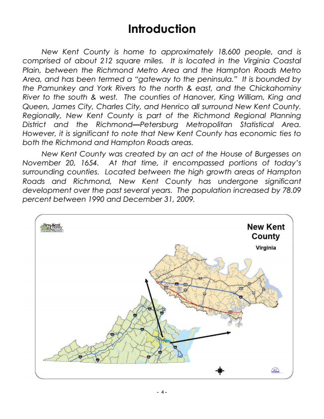
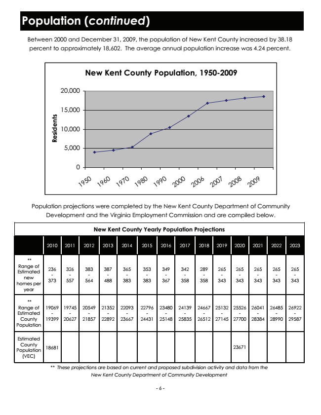
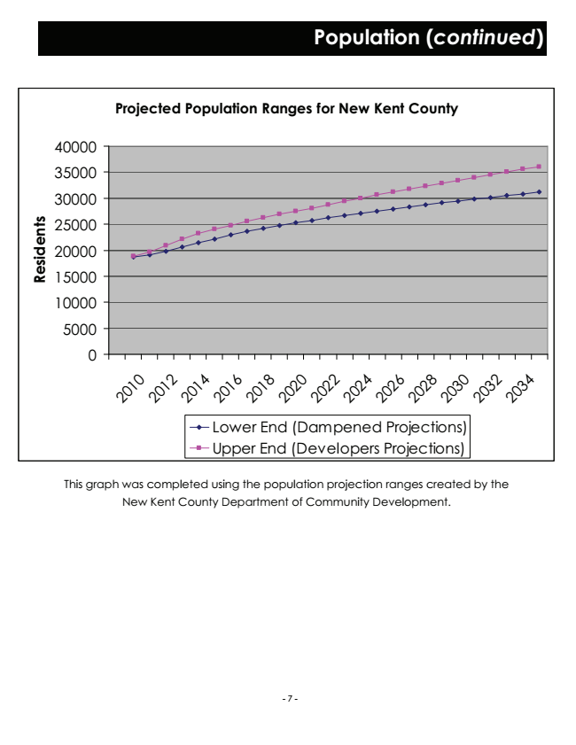
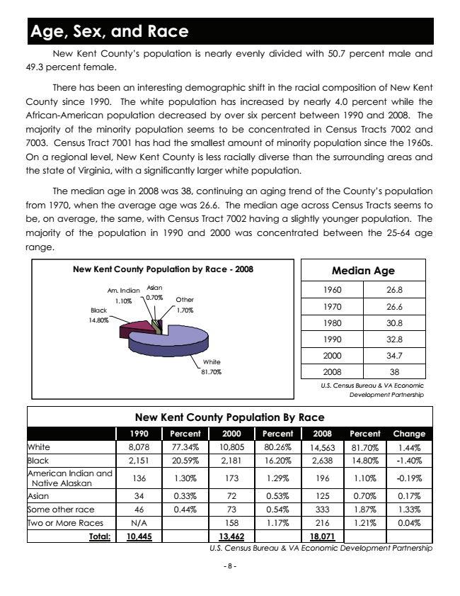
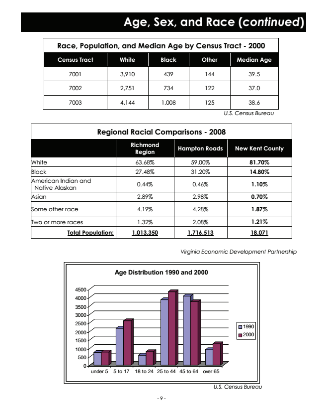

Data Summary
January 2010

Table of Contents
Page
New Kent County Statistical Snapshot .............................................. 3
Introduction............................................................................................ 4
Population ............................................................................................ 5-7
Age, Sex, and Race ........................................................................... 8-9
Households and Families..................................................................... 10
Labor Force and Employment ....................................................... 11-12
Income ............................................................................................... 13-14
Housing ............................................................................................... 15-16
Schools ................................................................................................ 17-19
Economic Development, Taxes, and Utilities................................... 20
Transportation.......................................................................................21
Agriculture and Forestry ...................................................................... 22
Employment and Wages .................................................................... 23
Taxable Sales and Travel Impacts ..................................................... 24
- 2 -

Statistical Snapshot
Estimated Population (December 31, 2009) 18,602
Population Percentages by Race and Sex, 2008
White 81.9%
African-American 14.8%
Hispanic 1.8%
Other 1.5%
Male 50.70%
Female 49.30%
Median Age in Years, 2008 38
Land Area (square miles) 212
Population Density (persons per square mile) December, 2009 87.63
Total Housing Units—December 31, 2009 7,677
Total Housing Units—2010 Projection 7,929
Average Household Size (persons per household) 2009 2.560
School Enrollment (2008-09 School Year)
G.W. Watkins Elementary School 635
New Kent Elementary School 563
New Kent Middle School 678
New Kent High School 916
Median Family Income, 2009 $73,245
Per Capita Income, 2006 $31,886
Civilian Labor Force
Employed Residents, 2008 9,555
Unemployment Rate - October 2009 6.7%
Out-Commuters Approximately 80%
Educational Attainment, 2000 (25 Years and Older)
Graduate or Professional Degree 5.20%
Bachelor’s Degree 11.10%
Associate’s Degree/Some College 29.50%
High School Diploma 34.70%
Less than Grade 12 19.40%
Military Personnel, 2000 57
Annual Taxable Sales, 2008 $94,688,177
- 3 -

Introduction
New Kent County is home to approximately 18,600 people, and is comprised of about 212 square miles. It is located in the Virginia Coastal Plain, between the Richmond Metro Area and the Hampton Roads Metro Area, and has been termed a “gateway to the peninsula.” It is bounded by the Pamunkey and York Rivers to the north & east, and the Chickahominy River to the south & west. The counties of Hanover, King William, King and Queen, James City, Charles City, and Henrico all surround New Kent County. Regionally, New Kent County is part of the Richmond Regional Planning District and the Richmond—Petersburg Metropolitan Statistical Area. However, it is significant to note that New Kent County has economic ties to both the Richmond and Hampton Roads areas.
New Kent County was created by an act of the House of Burgesses on November 20, 1654. At that time, it encompassed portions of today’s surrounding counties. Located between the high growth areas of Hampton Roads and Richmond, New Kent County has undergone significant development over the past several years. The population increased by 78.09 percent between 1990 and December 31, 2009.
- 4 -
Population
The December 31, 2009 estimated population of New Kent County was 18,602. New Kent County’s population grew by 78.09 percent between 1990 and December 31, 2009. As shown below, growth has been spread fairly evenly throughout the County.
New Kent County’s growth is mainly due to in-migration (the migration of new residents from larger urban areas). The County’s natural increase between 1990 and 2009 was approximately 1,755. The estimated net migration was over 5,150. Even with this population increase, the population density in December 2009 was 87.63 persons per square mile, demonstrating that the County still maintains its rural nature.
Population by Census Tract, 1930-2000
1930 1940 1950 1960 1970 1980 1990 2000
New Kent County 4,300 4,092 3,995 4,504 5,300 8,781 10,445 13,462
Census Tract 7001 984 917 1,939 1,995 1,364 2,810 3,583 4,493
Census Tract 7002 1,026 953 1,153 1,304 1,337 2,421 2,730 3,607
Census Tract 7003 2,290 2,222 903 1,205 2,599 3,550 4,132 5,362
0
U.S. Census Bureau
New Kent County Population By Census Tract
6000
5000
4000
7001 Census
3000
Tract 7002 Census Tract 2000
7003 Census Tract
1000
1980 1990 2000
- 5 -

Population (continued)
Between 2000 and December 31, 2009, the population of New Kent County increased by 38.18 percent to approximately 18,602. The average annual population increase was 4.24 percent.
New Kent County Population, 1950-2009
20,000
15,000
10,000
5,000
0
1
9
5
0
1
9
6
0
1
9
7
0
1
9
8
0
1
9
9
0
2
0
0
0
2
0
0
6
2
0
0
7
2
0
0
8
2
0
0
9
Population projections were completed by the New Kent County Department of Community Development and the Virginia Employment Commission and are compiled below.
New Kent County Yearly Population Projections
2010 2011 2012 2013 2014 2015 2016 2017 2018 2019 2020 2021 2022 2023
** Range of Estimated new homes per year
- 6 - 236 - 373
326 - 557
383 - 564
387 - 488
365 - 383
353 - 383
349 - 367
342 - 358
289 - 358
265 - 343
265 - 343
265 - 343
265 - 343
265 - 343
** Range of Estimated County Population
19069 - 19399
19745 - 20627
20549 - 21857
21352 - 22892
22093 - 23667
22796 - 24431
23480 - 25148
24139 - 25835
24667 - 26512
25132 - 27145
25526 - 27700
26041 - 28384
26485 - 28990
26922 - 29587
Estimated County Population (VEC)
18681 23671
** These projections are based on current and proposed subdivision activity and data from the New Kent County Department of Community Development

Projected Population Ranges for New Kent County
40000
35000
30000
25000
20000
15000
10000
5000
0
2
This graph was completed using the population projection ranges created by the New Kent County Department of Community Development.
1 0
0
2
1 0
2
2
1 0
Population (continued)
4
2
0
1
6
2
0
1
8
2
0
2
0
2
0
2
2
2
0
2
4
2
0
2
6
2
0
2
8
2
0
3
0
2
0
3
2
2
0
3
4
Lower End (Dampened Projections) Upper End (Developers Projections)
- 7 -

Age, Sex, and Race
New Kent County’s population is nearly evenly divided with 50.7 percent male and 49.3 percent female.
There has been an interesting demographic shift in the racial composition of New Kent County since 1990. The white population has increased by nearly 4.0 percent while the African-American population decreased by over six percent between 1990 and 2008. The majority of the minority population seems to be concentrated in Census Tracts 7002 and 7003. Census Tract 7001 has had the smallest amount of minority population since the 1960s. On a regional level, New Kent County is less racially diverse than the surrounding areas and the state of Virginia, with a significantly larger white population.
The median age in 2008 was 38, continuing an aging trend of the County’s population from 1970, when the average age was 26.6. The median age across Census Tracts seems to be, on average, the same, with Census Tract 7002 having a slightly younger population. The majority of the population in 1990 and 2000 was concentrated between the 25-64 age range.
New Kent County Population by Race - 2008
Median Age
Am. Indian
Asian
1960 26.8 1.10%
0.70%
Other Black
1.70%
1970 26.6
14.80%
1980 30.8
1990 32.8
White
2000 34.7
81.70%
2008 38
U.S. Census Bureau & VA Economic Development Partnership
New Kent County Population By Race
1990 Percent 2000 Percent Change White 8,078 77.34% 10,805 80.26% 1.44% Black 2,151 20.59% 2,181 16.20% -1.40% American Indian and
Native Alaskan
2008
Percent
14,563
81.70% 2,638
14.80%
136 1.30% 173 1.29% 196
1.10%
-0.19%
Asian 34 0.33% 72 0.53% 125
0.70%
0.17% Some other race 46 0.44% 73 0.54% 333
1.87%
1.33% Two or More Races N/A 158 1.17% 216
1.21%
0.04% Total: 10,445 13,462
18,071 U.S. Census Bureau & VA Economic Development Partnership
- 8 -

Age, Sex, and Race (continued)
Race, Population, and Median Age by Census Tract - 2000
Census Tract White Black Other Median Age
7001 3,910 439 144 39.5
7002 2,751 734 122 37.0
7003 4,144 1,008 125 38.6
U.S. Census Bureau
Regional Racial Comparisons - 2008
Richmond Region
Hampton Roads New Kent County
White 63.68% 59.00% 81.70%
Black 27.48% 31.20% 14.80% American Indian and
Native Alaskan
0.44% 0.46% 1.10%
Asian 2.89% 2.98% 0.70%
Some other race 4.19% 4.28% 1.87%
Two or more races 1.32% 2.08% 1.21%
Total Population: 1,013,350 1,716,513 18,071
Virginia Economic Development Partnership
Age Distribution 1990 and 2000
4500 4000
3500 3000 2500
1990 2000
2000 1500
1000 500 0
under 5 5 to 17 18 to 24 25 to 44 45 to 64 over 65
U.S. Census Bureau
- 9 -

Households and Families
The number of occupied households in New Kent County increased by 95.13 percent from 1990 to 2009. This is reflective of the 77.86 percent increase in population from 1990 to 2009. The average family size in New Kent County in 2009 was 2.97, with the average household size being 2.560. The average household size has followed current trends and has steadily declined over the past few decades, while the number of households has dramatically increased over time. The average household size is expected to decrease to 2.40 by 2020. Within New Kent County, approximately 65.3 percent of the population over 15 years of age is married, while 7.5 percent is divorced.
Average Household by Size
Number of 4
Occupied Households
3
3.51
1960 1,134
2
2.95
2.77
2.588
2.574
2.56
2.65
1970 1,487 1980 3,008 1990 3,719
0
1970
Year
2.6
1
2000 4,925 2007 6,792 2008 7,033
1970 1980 1990 2000 2006 2007 2008 2009
2009 7,257
U.S. Census Bureau
Marital Status - 2000
Households By Type - 2000
Married 65.3%
Total Number of Households
4,925
Never Married 18.8%
One Person Households 818
Male Householder 410
Separated 2.8%
Female Householder 408
Widowed 5.6%
Two or More Persons Family Households 4,107 3,897
Divorced 7.5%
Married Couples 3,282
U. S. Census Bureau
Other Family 615
Non Family 210
- 10 -
U.S. Census Bureau